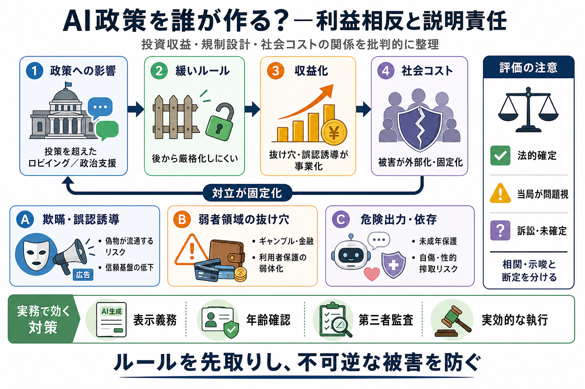

a16z × AI政策
01 / 12
読める要約（批判論点）
ルール
を誰が作る
a16zが政策に影響し得る一方で、投資先には欺瞞・規制回避・危険領域への関与が多い、という論調を整理します。
焦点
利益相反と説明責任（どの主体がルール形成へ寄与するか）
前提
AIの被害は拡大後に修正が困難になりやすい
※ご提示テキスト（要約・論点・意見）を圧縮
問題設定
02 / 12
投資ではなく“設計”へ
政策
への関与
記事は、a16zが投資の枠を超え、ロビイングや政治的支援を通じてAIルールの作り方に影響し得る点を問題視します。
主張
スーパーPAC等や人事・行政面で、州のAI規制が弱まる方向に寄与する可能性
なぜ重要
技術の普及が速く、後から厳格化しにくい（被害が固定化しがち）
1スライド1メッセージ：影響力が“社会コスト”に波及し得る
核心（構造）
03 / 12
欺瞞が収益に接続
Deception
の設計
記事の見立てでは、欺瞞（誤認誘導）や規制の抜け穴の活用が、単発の不祥事ではなく収益モデルに組み込まれている可能性があります。
例
Doublespeed：偽アカウントで“実在のようなAI広告”を拡散
論点
悪意立証が難しくても、信頼基盤が崩れることで被害が起き得る
文脈
AI時代は「偽物を作る」より「偽物が流通する」ことがリスク
日本語：欺瞞／誤認誘導（英：Deception）
規制回避
04 / 12
弱者領域で抜け穴
損
が外へ
ギャンブル・金融など、情報や保護が弱い利用者が損をしやすい領域で、解釈の隙間を突く発想が疑われています。
例（ギャンブル/賭博）
Edgar / Cheddr / Coverd：スウィープステークスやDFS等の“解釈”を利用する発想
帰結
依存・未成年保護・開示の重要性に対し、抜け穴志向は社会的損失を増やし得る
ここでの問題は“利用者保護の弱体化”
具体例
05 / 12
“だます”設計の変遷
Cluely
Cluelyは、面談・面接・試験などで“だます”ことを正当化する方向から始まり、その後に表現を薄めたとされます。
主張
最初は欺瞞を前提にしたプロダクト方針 → 後からトーン調整
論点
“何を可能にするか”が現場（採用・試験）を歪め、被害を後から回収しにくい
※提示テキストの記述に基づく圧縮
境界線
06 / 12
“危険出力”が直撃
AI
コンパニオン
Character AI / Ex-Human / Civitaiのように、AIの出力が感情・行動に直結し得る領域では、未成年や性的ななりすまし、自傷関連などのリスクが強く問題視されています。
対象
AIコンパニオン / なりすまし生成
懸念
依存、未成年保護、性的搾取、自傷に結びつく可能性
理由
学習・生成はスケールし、事故対応は後追いになりがち
英語：Deception／Safety／Irreversibility（概念）
金融・行政
07 / 12
土台の問題が拡大
規制の
摩擦
フィンテックでは、資金の取り扱い・税制優遇・預金保護の誤認など、制度の“土台”が崩れると被害が大きくなり得ると列挙されています。
例
Synapse：破綻時の利用者資金の扱い問題
例
Truemed：税制優遇の悪用可能性を批判
例
Tellus：預金保護を誤認させる訴求の可能性
LendUp / Zenefits 等でも当局措置があったとされる
政策×市場
08 / 12
利益が規制を動かす
緩さ
が回る
記事の全体像は、規制の緩さが投資収益に結びつく構造（被害コストの外部化）を示し、それが政策関与の危うさとして現れるという見立てです。
機序
緩い枠組み → 収益化が進む → 後から厳格化しづらい
危険
利用者被害や社会的損失が発生しても、回収設計次第で対立が固定化
“どこまで許容するか”が投資判断と絡む、という問題提起
注意点
09 / 12
断定の強さに注意
不確実性
ただし本テキストは、個々の案件で「最終的に法的にどう確定したか」や反論の粒度が同じではない可能性を明示しています。
見落とし得る差
違法確定（確定） vs 当局が問題視 / 訴訟が続く（未確定）
読み方
相関や示唆として扱い、法的ステータスを区別して評価する必要
批判論点としての価値はあるが、評価は“確度”別に
検討観点
10 / 12
実務で効く論点
要件
化
政策設計では、表示義務・年齢確認・依存や危険行動を誘発しない設計・第三者監査・実効的な執行（罰則/監督）などが現実的な論点になります。
安全
実装と運用（監査可能性、ラベル、年齢制限の“実効”）
消費者保護
欺瞞・誤認・開示不足を抑える規律
ガバナンス
投資家の条件（安全・コンプラ、監査体制、経営改善の実効性）
“ルールを先取り”することが、事故固定化を抑える
結論（意見）
11 / 12
重要だが、断定は保留
要点
3つ
この論点は「ルールを決める側の倫理と利益相反」を検証する上で重要です。ただし読者は法的確定状況と説明の不足に注意すべきです。
倫理
透明性が鍵（投資収益と規制設計の接続が疑われる）
安全
欺瞞・依存誘発・未成年保護は優先度が高い
手続
確定度の差を分けて見る（相関・示唆と断定を混ぜない）
不可逆性（拡大後の修正困難）が背景にある
まとめ
12 / 12
次に問うこと
確認
事項
次の確認ができると、批判の当たりどころと改善の方向がより明確になります。
法的確定度
違法確定・当局措置・訴訟継続の区別（同列に扱わない）
透明性
誰が何を根拠に何を要求したか（政策関与の説明責任）
安全の実装
年齢確認・表示・監査の運用実効（ポリシーだけでは不十分）
反復防止
緩い枠組みが次の抜け穴を生む循環を止める制度設計
References（提示テキスト中の企業名・論点を素材化）：Doublespeed / Cluely / Edgar / Cheddr / Coverd / Character AI / Ex-Human / Civitai / Synapse / Truemed / Tellus / LendUp / Zenefits
REFERENCES
02 / 14
References
No references found